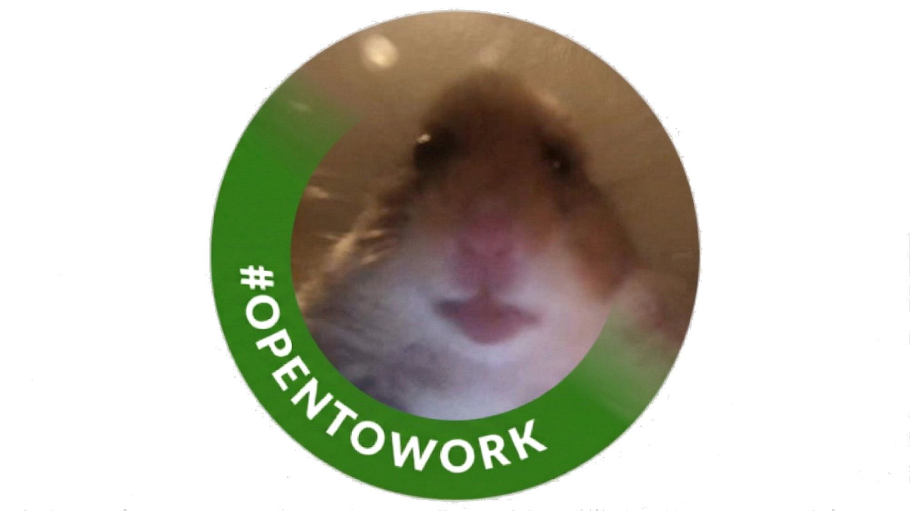

LPCSG — Spring 2026 General Election
Bringing transparency, accountability, and student-first budgeting to Las Positas College.
Hey! I'm David, a freshman at Las Positas College pursuing four Associate degrees in Economics, Mathematics, Business, and Communications. I'm planning to transfer as a junior in Fall 2027.
Find me on campus, I'll be giving out gum packs for free (limited time & stock)
Before LPC, I served as a commissioned officer in the Singapore Armed Forces, where I led teams, managed operational resources, and learned first-hand that effective leadership begins with accountability. Discipline and financial accountability is exactly what I want to bring to Student Government.
My academic path is built around finance and economics. From quantitative modeling to budget analysis, I have the foundation to be a skilled steward of student funds and the drive to make that work visible to every student on campus.
Before running, I listened. I talked to students, club leaders, and faculty. Three critical financial issues kept coming up:
Students fund this government through fees, but most have no idea where that money goes.
"...tf? 136k?"
Yeah, it is, according to the 4-30-2025 Senate Meeting Agenda. This information gap erodes trust and disconnects students from their own government. Every student deserves to know how their money is being spent. This has been a recurring issue since 2023 (see article below), and it ends with me.
If elected, I will publish a clear and accessible budget breakdown every semester so that you know how your fees are being used.
2025–2026 LPCSG Budget — $136,000 Total (Account 903205)
Student clubs are experiencing chronic delays in receiving approved funding, forcing them to cancel events, use their own money, or stop operating entirely.
"Oh, I'm planning on transferring to Berkeley or LA..."
Around 60% of us intend to transfer, and clubs can be a huge boost to our applications. Funding limbo hurts both student life and our chances. Active clubs are one of the strongest drivers of student retention and transfer success. When they can't operate, everyone loses.
I will work directly with YOUR choice of Director of Clubs to make funding and club recognition smooth and predictable.
Whether it be transferring to your dream school or building a community, I will support your goals.
LPC Students with Transfer Goal — By Term (Source: LPC Student Characteristics Reports)
Student Headcount by Major Area — Fall 2024 (Source: LPC Declared Major Report)
Just because LPC is a commuter school doesn't mean it has to feel like one. Let's do something about it.
"Bro, I only drive here cuz attendance is graded"
Last year, less than 12% of the student body voted. I get it. When I enrolled in Fall, nobody made me feel like I should care about campus life.
But this campus belongs to all 8,000 of us. Not just those who vote.
I want to hear your ideas. Together, we can make them a reality.
Policy without creativity is just process. Here are concrete, campus-specific ideas I want to champion. Let's turn student government from a bureaucracy into a genuine engine for campus improvement.
Match real campus challenges to clubs that can solve them. Reward participation with volunteer hours, awards, or tangible incentives.
Instead of outsourcing campus problems to administrators, we can introduce real campus case studies into club projects. A club that solves a genuine problem (improving signage, redesigning a form, analyzing foot traffic) earns recognition, awards, and verified volunteer hours. This turns extracurriculars into résumé-building, real-world experience.
Commission the Data Science and Journalism clubs to gather qualitative and quantitative data from the student body, so every budget decision is backed by evidence, not assumptions.
By partnering with existing clubs, we can run semesterly surveys, focus groups, and data analyses that give us a real picture of campus needs. Students get hands-on research experience and Student Government gets the data it needs to spend wisely.
Identify genuine student needs on campus and have clubs meet them through fundraising. Turn service into revenue while solving real problems.

Example initiatives:
Your input shapes my platform. Submit an anonymous message about campus finances, student government, or anything LPC-related. Your message appears on the board below with no name and no tracking.
No name. No email. No tracking. Messages are shared publicly on the board below and visible to all visitors. Profanity is filtered automatically.
The Spring 2026 General Election is here. Cast your vote for a Director of Finances who will treat student money with the respect it deserves and keep you informed every step of the way.